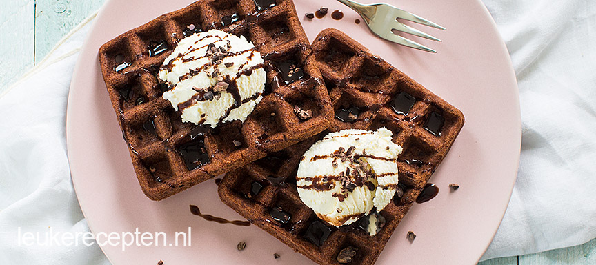

Brownie wafels
Deze smeuïge chocolade wafels zijn heerlijk als toetje of bij de koffie of thee.
Ingedriënten
- 100 gr bloem
- 20 gr cacao
- 125 gr suiker
- 1 theelepel bakpoeder
- Snuf zout
- 2 eieren
- 175 gr gesmolten boter
- 1 theelepel vanille aroma
- 2 eetlepels cacao nibs
- Bolletjes ijs en chocoladesaus voor garnering
Bereidingswijze
- Meng de bloem, cacao, bakpoeder, zout en suiker door elkaar in een kom.
- Voeg de gesmolten boter, vanille aroma en eieren toe en meng met een garde tot een glad beslag.
- Schep dan de cacao nibs er door, deze geven een lekkere crunch.
- Laat het beslag ca. 20 minuten staan.
- Verwarm ondertussen het wafelijzer.
- Vet het in met een beetje boter.
- Schep ongeveer 1,5 sauslepel beslag per wafel in het ijzer.
- Bak de wafels in ongeveer 4 minuten gaar.
- Vergeet niet om tussen de de gebakken wafels door het ijzer opnieuw in te vetten.
- Serveer de brownie wafels bijvoorbeeld als toetje met een bolletje ijs en wat chocoladesaus.

Tip: Doe er stukjes chocoladereep bij om het extra lekker te maken.